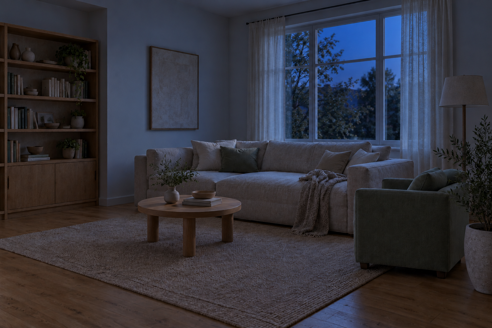

내가 머무는 시간의 빛
소파에 앉았을 때,
어떤 빛이면 편할까요?
낮과 밤을 바꾸고 등을 하나씩 켜 보세요.
고객의 생활을 듣고, 같은 공간의 다른 제안을
이해하며 고르는 과정을 체험합니다.
소리·마감·공간 체험 →


AI 생성 공간 · 조명 제안 예시낮 · 모두 끔
소파에 앉는 시간에서, 빛을 고릅니다.
필요한 자리를 떠올리고, 벽의 반사와 옆자리 조명을 비교해 보세요.
생활의 요구에서, 이해할 수 있는 제안으로
“소파를 직접 쏘지 않고,
필요한 자리는 밝게.”
실제 협의 자료에는 소파 구역의 밝기, 디밍과 빛 색 조절, 별도 회로, 눈에 보이는 스팟 조명 대신 벽을 활용한 간접 느낌에 관한 요구가 있습니다.
여기서는 그 요구를 설명하기 위해 만든 다른 가상 거실을 사용합니다. 이 이미지가 당시 시공 결과나 아비드의 단독 조명 설계 실적을 뜻하지 않습니다.
마음에 드는 빛을 고른 다음
이 제안이 내 공간에서 가능한지,
현장에서 함께 확인합니다.
- 소파에서 등기구가 직접 보이는지, 필요한 자리와 책이 충분히 보이는지
- 천장 속 설치 여유와 흡음재·발열 조건, 배선과 별도 회로
- 선택한 기구의 디밍·색 조절·스위치 호환성
- 설치 후 실제 조도와 눈부심, 재료에서 보이는 색
체험 안내
- AI 생성 거실에서 낮과 밤, 빛의 위치와 분위기를 살펴보는 제안입니다.
- 실제 조도·색온도·배광·눈부심을 계산한 결과나 설치 후 성능을 보증하는 화면이 아닙니다.